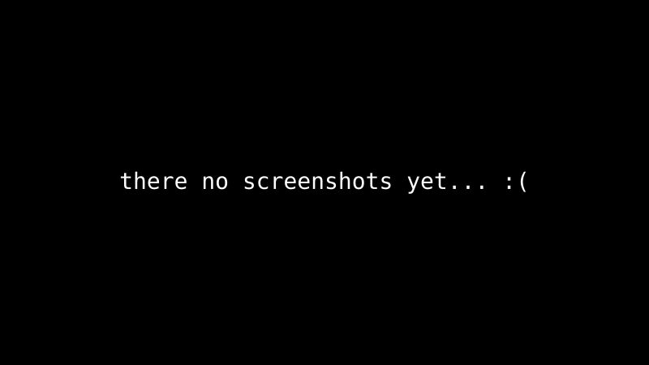

LFS / На основе исходников
Summit построен на основе Linux From Scratch и сборки системы из исходников.

Независимый дистрибутив Linux на базе LFS, ориентированный на прозрачность, стабильность, минимальные накладные расходы и полный контроль над системой.
Summit Linux следует принципам Linux From Scratch: прозрачные компоненты, контролируемая сборка и минимум лишнего софта.
Summit построен на основе Linux From Scratch и сборки системы из исходников.
Пакетный менеджер, способный собирать из исходников, устанавливать бинарные пакеты, управлять репозиториями и выполнять криптографическую проверку.
Подписанные зеркала, доверенные ключи, поддержка CRL и защита от отката версий.
Пакетный менеджер, созданный специально для Summit Linux.

picu управляет репозиториями, рецептами сборки, бинарными пакетами, подписями, хранилищами доверия и базами пакетов.
$ picu sync [ OK ] получение репозиториев [ OK ] проверка подписей [ OK ] обновление индексов пакетов [ OK ] синхронизация завершена $ picu add vim [ OK ] поиск в зеркале [ OK ] проверка версии [ .. ] установка Vim
Заглушки — настоящие скриншоты будут добавлены сюда.

Почему система из исходников с подписанными индексами.
| Параметр | Summit | Другие |
|---|---|---|
| База | LFS / из исходников | Готовые бинарники |
| Менеджер пакетов | picu (исходники + бинарники) | Только бинарники |
| Доверие | Подписанные индексы, CRL, срок действия | По-разному |
| Init | OpenRC / runit на выбор | Фиксированный |
| Рабочий стол | Hyprland / минимальный, на выбор | Тяжёлое фиксированное DE |
| ARM | Запланировано (aarch64) | По-разному |
Архитектура, модель безопасности, рецепты пакетов, команды CLI и дорожная карта разработки.
Summit Linux — независимый дистрибутив Linux на основе LFS и
исходного кода, использующий picu как пакетный
менеджер. Документация проекта описывает модель доверия, модель
транзакций, изоляцию сборки и поэтапный план реализации.